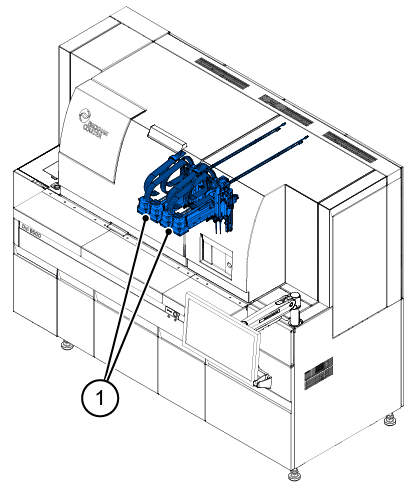
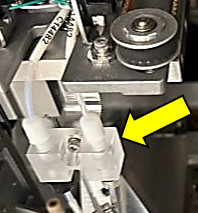
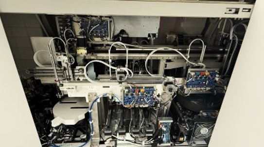
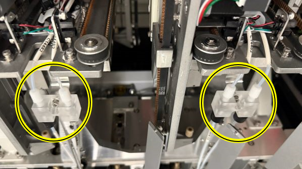

Replacing the Reagent Pipettor Fluid Manifold
This topic includes information about how to replace the reagent pipettor manifold.
Safety Reminder
Servicing the DxI 9000 instrument involves potential risks for pinch and puncture, electrical shock, and exposure to hazardous materials. You must mitigate these risks by taking appropriate countermeasures. See Safety for more information.
- Handle and dispose of biohazard materials in accordance with laboratory procedures.
- Recognize potential exposure to blood-borne pathogens and apply all safety precautions.
| Table of Contents |
|---|
| Required Materials |
| Illustrations |
| Replacing the Reagent Pipettor Fluid Manifold |
| Verification |
Required Materials
- Replacement reagent pipettor fluid manifold
- 2.5mm Allen driver
- Tool, Wrench, fluidic connector click and seal CnS, 1/4-28 (optional)
- Service reagent packs
- Disposable tips
- Substrate
- Sample containers
- Wash buffer
- Waste bags
Illustrations
The following illustrations show component locations.

| 1 | Reagent Pipettors |

Fastened to the back of the reagent pipettor gantry, this acrylic manifold connects the tubing from the pump syringe to the Y-axis tubing.
Replacing the Reagent Pipettor Fluid Manifold
Perform this procedure to replace the reagent pipettor fluid manifold.
- Turn off the instrument. See Turning Off the Instrument for more information.
- Slide open the rear doors on the instrument.

- Locate the reagent pipettor fluid manifolds.

- Remove the existing manifold.
- Install the new manifold. Be sure all connections are secure and properly aligned.
- Confirm the manifold functions correctly using the service reagent packs.
- Prime the instrument and check for leaks. See Priming the Instrument for more information.
- Calibrate the pressure sensors for the reagent pipettors. See Calibrating the Pressure Sensors for the Reagent Pipettors for more information.
- Perform the Low Volume Reagent Pipetting Automated System Diagnostics (ASD) test. See Performing the Low Volume Reagent Pipetting ASD Test for more information.
Verification
Complete the verification of service repair. See Verification of Service Repairs for more information.